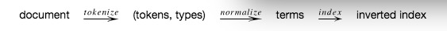
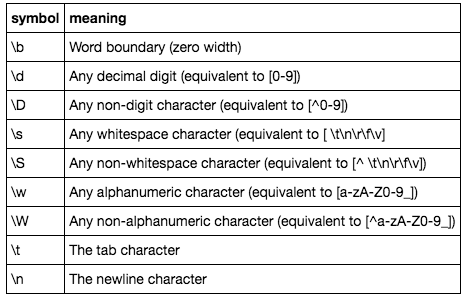
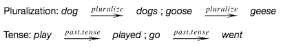
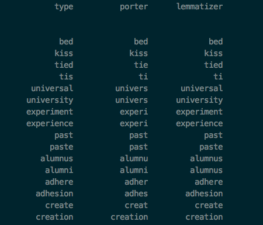

信息检索入门2
Contents

介绍
这是第二篇，主要介绍一些nlp的知识。
索引管道（Indexing Pipeline）

|
|
符号化（Tokenization）
将文档拆分为标记的过程。 python的split()函数： >str.split(str=“”, num=string.count(str)) str – 分隔符，默认为所有的空字符，包括空格、换行(\n)、制表符(\t)等。 num – 分割次数。
|
|
[‘he’, “didn’t”, ‘know’, ‘where’, ‘he’, ‘worked.’]
|
|
[‘what’, ‘about’, ‘multiple’, ‘spaces?’]
复合名词（Compound Nouns）
分割（Segmentation）
用于分割的统计分类算法 n-grams语言模型(index character subsequences)
标点（Punctuation）
删除所有标点符号
正则表达式（Regular Expressions）

|
|
[‘a’, ‘b’, ‘c’]
|
|
[‘a’, ‘b’, ‘c’]
|
|
[‘a’, “, “, “, ‘b’, “, “, “, ‘c’]
|
|
[‘hi’, ‘+there’] [‘wha’, ’t’, “, “‘”, ’s’, ‘ ‘, ‘up’, ‘?’, “]
|
|
[‘A’, ‘first-class’, ‘ticket’, ‘to’, ‘the’, ‘U.S.A.’, “isn’t”, ‘expensive?’] [‘A’, ‘first’, ‘class’, ‘ticket’, ‘to’, ‘the’, ‘U’, ’S’, ‘A’, ‘isn’, ’t’, ‘expensive’, “] [‘A’, ‘first’, ‘class’, ‘ticket’, ‘to’, ‘the’, ‘U’, ’S’, ‘A’, ‘isn’, ’t’, ‘expensive’] [‘A’, ‘first’, ‘-class’, ‘ticket’, ‘to’, ‘the’, ‘U’, ‘.S’, ‘.A’, ‘.’, ‘isn’, “’t”, ‘expensive’, ‘?’] [‘A’, ‘first-class’, ‘ticket’, ‘to’, ‘the’, ‘U’, ‘.’, ’S’, ‘.’, ‘A’, ‘.’, “isn’t”, ‘expensive’, ‘?’] [‘A’, ‘first-class’, ‘ticket’, ‘to’, ‘the’, ‘U.S.A.’, “isn’t”, ‘expensive’, ‘?’]
标准化（Normalization）
将type聚类为词项的过程。 问题包括：删除常用词，特殊字符，大小写，形态
停用词（Stop words）
去除常用词：the, a, be 为什么去除常用词：节省空间，没有语义内容 例外：”to be or not to be” 全是停用词
口音/变音符号（Accents/Diacritics）
naive vs. naïve pena (sorrow) vs peña (cliff)
Case
将所有内容转换为小写。
词干/ Lemmatizing（Stemming / Lemmatizing）
形态学(morphology)
（语言学）关于单词如何在语言中采用不同形式的规则的研究。 例：

stem
基于粗糙形态学启发式标准化。(To normalize based on crude morphology heuristics.) 删除所有“-s”和“-ed”后缀。
lemmatize
使用语言的形态规则创建单词类型的等价类。 To create equivalence classes of word types using the morphological rules of a language. 通常依靠词性标注来选择规则。 (Often relies on part-of-speech tagging to select rules.) 例:if bed is a noun, then do not remove -ed suffix.
Simple stemmer
定义一个保留词干的stem函数，其实自己写实现不现实。 [‘tied’, ‘ties’, ‘tis’, ‘bed’, ‘cities’]，分析一下这5个词的词干。
|
|
Stemming Errors
over-stemming: merge types that should not be merged. under-stemming: fail to merge types that should be merged.
|
|
[‘ti’, ’t’, ‘ti’, ‘b’, ‘cit’]
输出明显有问题，去掉了不该去的
Porter Stemmer
非常常用的词干分析器，具有一组复杂的启发式算法。 nltk的词干分析器比刚才那个优秀多了，哈哈
|
|
[‘tie’, ‘tie’, ‘ti’, ‘bed’, ‘citi’]
|
|
citi
|
|
[‘bed’, ‘kiss’, ‘tie’, ‘ti’, ‘univers’, ‘univers’, ‘experi’, ‘experi’, ‘past’, ‘past’, ‘alumnu’, ‘alumni’, ‘adher’, ‘adhes’, ‘creat’, ‘creation’]
WordNet Lemmatize
1 2 3 4 5 6 7 8from nltk.stem.wordnet import WordNetLemmatizer # See description: https://wordnet.princeton.edu/wordnet/man/morphy.7WN.html lemm = WordNetLemmatizer() lemm_results = [lemm.lemmatize(x) for x in types] print('%15s\t%15s\t%15s' % ('type', 'porter', 'lemmatizer')) print('\n') print('\n'.join(['%15s\t%15s\t%15s' % (t[0], t[1], t[2]) for t in zip(types, porter_results, lemm_results)]))
|
|
are is
|
|
be be
Author KoU2N
LastMod 2018-08-22